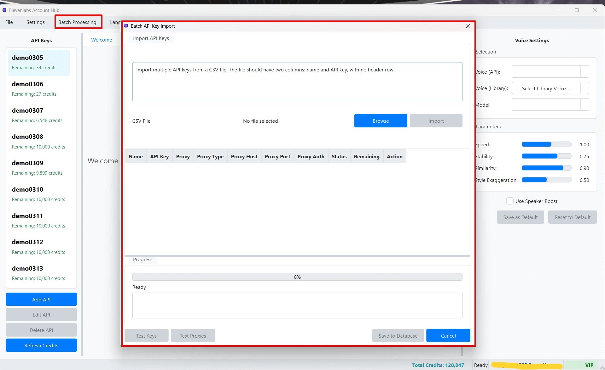

Nhập Hàng loạt Khóa API từ Tệp CSV
Nếu bạn quản lý một số lượng lớn Khóa API ElevenLabs và muốn thêm chúng vào phần mềm một cách nhanh chóng và hiệu quả, tính năng "Nhập Hàng loạt Khóa API" (Batch API Key Import) từ tệp CSV là một giải pháp tối ưu. Thay vì phải thêm từng khóa một cách thủ công, bạn có thể chuẩn bị một tệp dữ liệu và nhập tất cả cùng một lúc.
1. Chuẩn bị Tệp CSV (Comma Separated Values)
Bước đầu tiên và quan trọng nhất là chuẩn bị một tệp CSV chứa thông tin các Khóa API mà bạn muốn nhập. Tệp CSV này phải tuân theo một cấu trúc cột cụ thể để phần mềm có thể đọc và xử lý dữ liệu một cách chính xác.
Cấu trúc Cột trong Tệp CSV:
Dòng đầu tiên của tệp CSV phải là dòng tiêu đề, chứa tên các cột. Các cột được hỗ trợ bao gồm:
name(Bắt buộc): Tên gợi nhớ bạn muốn đặt cho Khóa API trong phần mềm. Tên này phải là duy nhất trong số các khóa đã có và các khóa đang được nhập.key(Bắt buộc): Giá trị thực của Khóa API ElevenLabs. Đây là chuỗi ký tự mà bạn nhận được từ trang web ElevenLabs.proxy_enabled(Tùy chọn): ĐiềnTRUE(hoặc1) nếu muốn bật proxy cho khóa này, hoặcFALSE(hoặc0) nếu không. Nếu để trống, mặc định làFALSE.proxy_type(Tùy chọn): Loại proxy. Các giá trị hợp lệ làHTTP,HTTPS,SOCKS4,SOCKS5. Chỉ cần thiết nếuproxy_enabledlàTRUE.proxy_host(Tùy chọn): Địa chỉ IP hoặc tên miền của máy chủ proxy. Chỉ cần thiết nếuproxy_enabledlàTRUE.proxy_port(Tùy chọn): Số cổng của máy chủ proxy. Chỉ cần thiết nếuproxy_enabledlàTRUE.proxy_auth_enabled(Tùy chọn): ĐiềnTRUE(hoặc1) nếu proxy yêu cầu xác thực, hoặcFALSE(hoặc0) nếu không. Chỉ cần thiết nếuproxy_enabledlàTRUE.proxy_username(Tùy chọn): Tên người dùng cho proxy (nếuproxy_auth_enabledlàTRUE).proxy_password(Tùy chọn): Mật khẩu cho proxy (nếuproxy_auth_enabledlàTRUE).
Ví dụ về Nội dung Tệp CSV:
name,key,proxy_enabled,proxy_type,proxy_host,proxy_port,proxy_auth_enabled,proxy_username,proxy_password
TaiKhoanMienPhi_001,abcdef1234567890abcdef12345678,FALSE,,,,,,
TaiKhoanMienPhi_002,ghijkl0987654321ghijkl09876543,TRUE,HTTP,192.168.1.100,8080,FALSE,,
TaiKhoanVIP_Alpha,mnopqr1122334455mnopqr11223344,TRUE,SOCKS5,proxy.server.com,1080,TRUE,user_proxy,pass_for_proxy
AccChinh,zxcvbnmasdfghjklqwertyuiop123456,FALSE,,,,,,- Dòng Tiêu đề: Đảm bảo dòng đầu tiên của tệp CSV là dòng tiêu đề chính xác như mô tả ở trên.
- Thứ tự Cột: Thứ tự các cột không quá quan trọng, miễn là tên cột (trong dòng tiêu đề) là chính xác và khớp với các tên cột được hỗ trợ.
- Giá trị Trống: Nếu một Khóa API không sử dụng proxy hoặc một thông số proxy cụ thể không áp dụng, bạn có thể để trống ô tương ứng trong tệp CSV (ngoại trừ cột
namevàkeylà bắt buộc). Hoặc, đối với các trường boolean nhưproxy_enabled, bạn có thể điềnFALSEhoặc0. - Mã hóa Tệp: Đảm bảo tệp CSV được lưu với mã hóa UTF-8 để tránh các vấn đề liên quan đến ký tự đặc biệt, đặc biệt nếu tên khóa (
name) của bạn có chứa ký tự tiếng Việt hoặc các ký tự không phải ASCII. - Tạo Tệp CSV: Bạn có thể tạo tệp CSV bằng một trình soạn thảo văn bản đơn giản (như Notepad, lưu với phần mở rộng
.csv) hoặc sử dụng các phần mềm bảng tính như Microsoft Excel, Google Sheets, LibreOffice Calc (chọn "Save As" hoặc "Download As" và chọn định dạng CSV).
Phần mềm có thể cung cấp một nút "Tải CSV Mẫu" (Download Sample CSV) trong cửa sổ Nhập Hàng loạt để bạn có thể tải về một tệp mẫu với đúng cấu trúc cột, giúp việc chuẩn bị tệp dễ dàng hơn. (Ví dụ: tệp sample_api_keys.csv hoặc sample_api_keys_public.csv trong thư mục gốc dự án).
2. Thực hiện Nhập Hàng loạt từ Tệp CSV
- Trong cửa sổ chính của phần mềm ElevenLabs Account Hub, điều hướng đến Thanh Menu và chọn "Batch Processing".
- Từ menu con xổ xuống, chọn "Nhập Hàng loạt Khóa API từ CSV" (Batch API Key Import from CSV).
- Cửa sổ "Nhập Hàng loạt Khóa API" (Batch API Key Import) sẽ xuất hiện.  (Hình ảnh: Cửa sổ chức năng Nhập Hàng loạt Khóa API)
- Nhấn nút "Chọn Tệp CSV" (Select CSV File).
- Một hộp thoại chọn tệp của hệ điều hành sẽ mở ra. Duyệt đến vị trí bạn đã lưu tệp CSV đã chuẩn bị ở Bước 1 và chọn tệp đó.
- Sau khi chọn tệp, tên của tệp CSV sẽ được hiển thị trong cửa sổ Nhập Hàng loạt.
- Xử lý Tên Khóa API Trùng lặp (Handle Duplicates):
Phần mềm cung cấp các tùy chọn để xử lý trường hợp tên Khóa API trong tệp CSV của bạn đã tồn tại trong cơ sở dữ liệu của ứng dụng:
- Bỏ qua (Skip): Nếu một tên Khóa API trong tệp CSV đã có trong phần mềm, Khóa API đó từ tệp CSV sẽ được bỏ qua và không được nhập hoặc cập nhật. Đây là tùy chọn an toàn nếu bạn chỉ muốn thêm các khóa mới.
- Ghi đè (Overwrite): Nếu một tên Khóa API trong tệp CSV đã có trong phần mềm, thông tin của Khóa API đó trong phần mềm (bao gồm giá trị khóa và cài đặt proxy) sẽ được cập nhật hoàn toàn bằng thông tin từ tệp CSV. Hãy cẩn thận với tùy chọn này vì nó có thể ghi đè lên dữ liệu hiện có.
Chọn tùy chọn xử lý trùng lặp phù hợp từ danh sách thả xuống được cung cấp.
- Nhấn nút "Bắt đầu Nhập" (Start Import).
- Phần mềm sẽ bắt đầu đọc tệp CSV và thực hiện việc thêm mới hoặc cập nhật các Khóa API vào cơ sở dữ liệu. Một thanh tiến trình có thể xuất hiện để hiển thị quá trình nhập.
- Xem Kết quả Nhập: Sau khi quá trình hoàn tất, một bảng tóm tắt kết quả thường sẽ được hiển thị ngay trong cửa sổ Nhập Hàng loạt. Bảng này sẽ cho bạn biết:
- Số lượng Khóa API được nhập/cập nhật thành công.
- Số lượng Khóa API bị bỏ qua (nếu bạn chọn tùy chọn "Bỏ qua" và có tên trùng lặp).
- Danh sách các lỗi gặp phải trong quá trình nhập (ví dụ: dòng dữ liệu không hợp lệ, tên khóa bị thiếu, giá trị khóa bị thiếu).
- Nhấn "Đóng" (Close) để thoát khỏi cửa sổ Nhập Hàng loạt.
3. Kiểm tra Kết quả sau khi Nhập
- Sau khi quá trình nhập hoàn tất, hãy quay lại cửa sổ chính của phần mềm và kiểm tra Danh sách Khóa API (Cột Trái). Các Khóa API mới (hoặc đã được cập nhật) từ tệp CSV của bạn sẽ xuất hiện ở đây.
- Quan trọng: Đối với các Khóa API mới được nhập, bạn nên thực hiện thao tác "Test Key & Fetch Info" cho từng khóa (hoặc sử dụng chức năng "Refresh All Credits") để xác minh tính hợp lệ của chúng và lấy thông tin tín dụng mới nhất từ ElevenLabs. Xem chi tiết tại Kiểm tra Tín dụng.